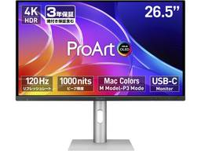
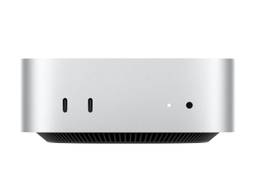
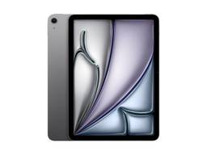
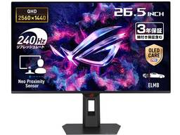
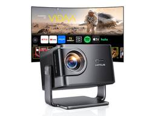

PC Watch
https://pc.watch.impress.co.jp
PC/テクノロジーの最新情報、レポート等でPC業界を先取り
フィード

【本日みつけたお買い得品】ASUSノートが6万9,800円！Amazonブラックフライデーの3万円引きで
PC Watch
Amazonは11月27日から29日にかけて、ブラックフライデー先行セールを実施中だ。14型ノートPCのASUS「Vivobook 14 X1404VA」は、直近価格からの3万円引きで、6万9,800円にて購入できる。
5時間前
【本日みつけたお買い得品】ASUSの31.5型4Kモニターが6千円引き！ブラックフライデー先行セール
PC Watch
Amazonにてブラックフライデー先行セールが開催中。ASUSが展開するブルーライト軽減機能を搭載したEye Careモニターがセール価格で販売されている。31.5型の「VP327Q」は直近価格から6,000円引きの3万1,980円で購入できる。
6時間前

【本日みつけたお買い得品】300Hz/0.4msと超高速！アイオーの24.5型ゲーミングモニターが2万円切り
PC Watch
Amazonは11月27日から29日にかけて、ブラックフライデー先行セールを実施している。24.5型ゲーミングモニターのアイオーデータ「GCFX EX-GD251KHB」は、直近価格から4,820円引きで、1万9,980円にて購入可能だ。
7時間前

【本日みつけたお買い得品】Apple Watch Series 12が約1万円引き！SE 3やUltra 3もセール中
PC Watch
Amazonは11月27日から29日にかけて、ブラックフライデー先行セールを実施中だ。「Apple Watch Series 12」(GPSモデル)は、直近価格からの値引きで、46mmケース版が1万801円引きの7万円、42mmケース版が1万800円引きの6万1,000円にて購入できる。
8時間前

【本日みつけたお買い得品】OLEDのプロ向けモニターが2万3千円引き！ASUS ProArt、11万円台に
PC Watch
Amazonにてブラックフライデー先行セールが開催中。ASUSが展開するブランド「ProArt」のプロフェッショナルモニター「PA279CDV-J」が直近価格から2万3,465円引きの11万6,600円で購入できる。
8時間前

【本日みつけたお買い得品】M6の最新Mac miniが1万6千円オフ。M5 Pro版も3万円引きに！
PC Watch
Amazonは11月27日から29日にかけて、ブラックフライデー先行セールを実施している。M6チップ搭載のApple「Mac mini(M6)」は、直近価格からの値引きで、16GBメモリ/256GB SSD版が1万6,000円引きの13万3,800円。16GBメモリ/512GB SSD版が1万5,000円引きの17万800円にて購入可能だ。
8時間前

【本日みつけたお買い得品】OLEDの16型モバイルモニターが約1万2千円引き！Amazonセール
PC Watch
Amazonにてブラックフライデー先行セールが開催中。ASUSが展開するモバイルモニターがセール価格で販売されており、16型OLEDの「MQ16FC-J」は直近価格から1万2,133円引きの4万3,220円で購入できる。
9時間前

【本日みつけたお買い得品】M5 Pro搭載の14.2型MacBook Proが約3万3千円オフ
PC Watch
Amazonにおいて、14.2型ノートPCのApple「MacBook Pro(14インチ,M5 Pro)」が直近価格から3万2,988円引きで、51万6,812円にて購入できる。
9時間前

【本日みつけたお買い得品】約1万2千円引き！4K/160Hzの31.5型ゲーミングモニター
PC Watch
Amazonにてブラックフライデー先行セールが開催中。ASUSが展開するゲーミングモニターがセール価格で販売されており、31.5型の「ROG Strix XG32UCG」は直近価格から1万2,462円引きの6万5,800円で購入できる。
9時間前

【今すぐ読みたい！人気記事】不要なプリンタやスキャナをまとめて処分！「小型家電リサイクル券」を試してみた - PC Watch 1
1
PC Watch
不要な小型家電を処分するに当たり、それらの中にPCが含まれている場合は、リネットジャパンの回収サービスを利用するのがベターというのは、これまでにも紹介した通りだ。PCが1台あるだけで、PCとは無関係な小型家電も一括で無料回収してもらえるので、なるべく手間を掛けずに小型家電類を一気に処分したい場合には最適だ。
12時間前

【今すぐ読みたい！人気記事】“溶ける”で話題の12VHPWRコネクタ、まじめに考察してみた - PC Watch
PC Watch
先日、いつものように編集と話をしていて、「PCIe 5.0の12VHPWRが溶ける溶けると言われてるんですが、大原さん的に分析して『俺ならこうやってコネクタを設計する』的な特集って難しいでしょうか」、「俺なら12VHPWR使わない(爆)」というバカな会話を交わしたりしていた。
12時間前

【本日みつけたお買い得品】Apple Watch Series 12が1万800円引き、SE 3とUltra 3も
PC Watch
Amazonにおいて、Appleのスマートウォッチ「Apple Watch Series 12(GPSモデル・42mmライトゴールドアルミニウムケース)」が、直近価格から1万800円引きとなる6万1,000円で販売中だ。
20時間前

【本日みつけたお買い得品】M4チップとWi-Fi 7対応の「11インチiPad Air」が11万6800円！
PC Watch
Amazonにおいて、Appleのタブレット「11インチiPad Air(M4・Wi-Fiモデル・128GB・スペースグレイ)」が、直近価格から1万3,000円引きとなる11万6,800円で販売中だ。
20時間前
【本日みつけたお買い得品】対象のMacとのまとめ買いで、BenQ 4Kモニターが最大10%オフ。Amazonセール
PC Watch
Amazonにて、対象のMacとBenQ製モニターをまとめ買いすると、モニターが最大10%オフとなるキャンペーンが実施されている。期間は11月27日から12月7日まで。
1日前

【本日みつけたお買い得品】240HzのQD-OLEDが1万8千円引き。ASUS製ゲーミングモニターがセール
PC Watch
Amazonのブラックフライデー先行セールにおいて、ASUSのゲーミングモニター「ROG Strix OLED XG27AQDMES-J」が、直近価格から1万8,555円引きの5万4,980円で販売されている。550ポイントも還元される。
1日前

【本日みつけたお買い得品】マウスのRadeon RX 9060 XT搭載ゲーミングPCが約4万円引き
PC Watch
Amazonのブラックフライデー先行セールにおいて、マウスコンピューターのゲーミングデスクトップPC「G TUNE DG(DGI5A6XB83SJW116AZ)」が、11月24日時点の価格から4万175円引きの29万7,330円で販売されている。
1日前
Windows「ベースライン保護」発表。8つの保護を1つの検証可能な状態に 10
PC Watch
自分のPCのセキュリティ機能がちゃんと全部有効になっているか、すぐに答えられるだろうか。Microsoftは11月17日(現地時間)、Windowsの基盤セキュリティ保護8項目をひとまとめにし、1つの検証可能なセキュリティ状態として扱う「Windowsベースライン保護」を発表した。現在Windows Insider Programを通じてプレビュー版を提供しており、一般提供は2027年を予定している。
1日前

【本日みつけたお買い得品】最大180型対応のプロジェクタが1万3,280円引き。単体でYouTubeも視聴できる
PC Watch
Amazonにて、最大180型の表示ができるプロジェクタ「WIMIUS K14」がブラックフライデー先行セールの対象となっており、商品ページのクーポン適用で、直近価格から1万3,280円引きの4万3,520円にて購入できる。
1日前

【本日みつけたお買い得品】GEEKOMのRyzen搭載ミニPCが8万円切り。ブラックフライデー先行セール
PC Watch
GEEKOMは、Amazonでブラックフライデー先行セールを開催している。例として、Ryzen 7 7730U、16GBメモリ、500GB SSDを搭載した「A5」が10%オフの7万9,191円で購入可能。アルミ筐体の採用や3基のM.2スロットの搭載などが特徴だ。
1日前
【本日みつけたお買い得品】REGZAの34型湾曲ゲーミングモニターが1万4,200円引き
PC Watch
Amazonのブラックフライデー先行セールにおいて、REGZAの34型湾曲ゲーミングモニター「RM-34G6SE」が、直近価格から1万4,200円オフの4万1,600円で販売されている。
1日前